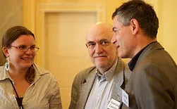
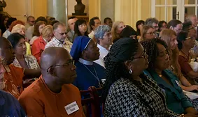
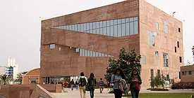
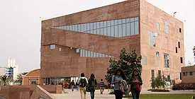

Events
Past Events
- 1st International Symposium in Warsaw, Poland, November 1989 (ISU)
- 2nd International Symposium in Berlin, Germany, August 1990 (ISU)
- 3rd International Symposium in St. Catherine’s, Canada, August 1991 (ISU)
- 4th International Symposium in London, May 1992 (ISU)
- 1st World Congress in Warsaw, Poland, 1993 (ISU)
- 2nd World Congress in Orlando, USA, 1995 (ISU)
- 3rd World Congress in Boston, USA, 1998 (ISU)
- 4th World Congress in Krakow, Poland, 2001 (ISUD) Theme: Mythos and Logos: How to Regain the Love of Wisdom
- 5th World Congress in Olympia, Greece, 2003 (ISUD) Theme: Religion, Politics and Suffering: Intercultural Dimensions and Challenges for Philosophy
- 6th World Congress in, Helsinki, Finland, 2005 (ISUD) Theme: Humanity at the Turning Point: Rethinking Nature, Culture and Freedom
- 7th World Congress in Hiroshima, Japan, 2007 (ISUD) Theme: Collective Memory, Philosophical Reflection and World Peace
- 8th World Congress in Beijing, China, 2010 (ISUD) Theme: Dialogue among Cultures: Peace, Justice and Harmony
- 9th World Congress in Olympia, Greece 2012 Theme: Democratic Culture: Historical Reflections and Modern Transformations
- ISUD Meeting during XXIII Congress of Philosophy, Athens, 2013
- 10th World Congress in Craiova, Romania 2014 Theme: The Human Being: Its Nature and Functions
- 11th World Congress in Warsaw, Poland 2016 Theme: Values and Ideals: Theory and Praxis
- 12th World Congress in Lima, Peru 2018 Theme: Philosophy in an Age of Crisis: Challenges and Prospects
XI ISUD World Congress Values and Ideals: Theory and Praxis
July 11-15, 2016 Warsaw, Poland
Congratulations on the successful XI ISUD World Congress hosted by the Polish Academy of Sciences, the University of Warsaw, and the Philosophy for Dialogue Foundation!
The 2016 XI ISUD World Congress was conducted as a celebration of the Society’s founding twenty-eight years ago in Warsaw. The Congress featured a geographically and culturally diverse group of scholars representing 39 countries from North and South America, Europe, Asia, Africa, and Pacific Island nations. Approximately 145 scholars attended and presented original research at the Congress. A spirit of good will and eagerness to engage in and cultivate inter-cultural philosophical dialogue pervaded the dynamics of the meeting.
CONGRESS PHOTO SHOTS
CONGRESS VIDEO CLIPS
Video 1 Video 2 Video 3Our deepest appreciation to the congress organizers, committee members whose hard work and contribution made the 2016 Congress such a successful and productive event!
CONGRESS ORGANIZERS
- Małgorzata Czarnocka – Professor of Philosophy, Institute of Philosophy and Sociology of the Polish Academy of Sciences, Editor-in-Chief of Dialogue and Universalism, Poland.
- Charles Brown – Distinguished Professor of Philosophy, Emporia State University, U.S.A.
HONORARY COMMITTEE
- Kevin M. Brien – Professor of Philosophy, Washington College, Maryland, U.S.A.
- Maria Pauline Eboh – Professor of Philosophy, Rivers State University at Port Harcourt, Nigeria.
- Steven Hicks – Professor of Philosophy, Director of the School of Humanities and Social Sciences, the Behrend College of Pennsylvania State University, former ISUD President, U.S.A.
- Victor J. Krebs – Professor of Philosophy, the Pontifical Catholic University of Peru, Peru.
- Werner Krieglstein — Professor Emeritus of Philosophy and Religious Studies, The College of DuPage, U.S.A.
- Janusz Kuczyński – Professor Emeritus of Philosophy, University of Warsaw, founder of ISUD and Honorary ISUD president, Dialogue and Universalism Honorary Editor-in-Chief, Poland.
- Leszek Kuźnicki – Professor of Biology, member of the Polish Academy of Sciences, former President of the Polish Academy of Sciences, Chairman of the Dialogue and Universalism Council, Poland.
- Michael Mitias – Professor of Philosophy, University of Michigan Dearborn in Dearborn, Michigan, former ISUD President, U.S.A.
- Mogobe Ramose– Professor Extraordinarius in Philosophy, University of South Africa, South Africa.
- Józef Niznik – Professor of Philosophy, Chairman of the Institute of Philosophy and Sociology of the Polish Academy of Sciences Council, member of Dialogue and Universalism Council, Poland.
- Vladimir Przhilenskiy – Professor of Philosophy, Moscow Academy of Law, Russia.
- John Rensenbrink – Professor of Philosophy, of Political Science, Co-founder of the Green Party of the United States, a founder of Maine Green Party, former ISUD President, U.S.A.
- Andrzej Rychard – Professor of Sociology, Director of Institute of Philosophy and Sociology of the Polish Academy of Sciences, Poland.
- Karol Henryk Toeplitz – Professor Emeritus of Philosophy, Christian Academy of Theology, member of Advisory Editorial Council of Dialogue and Universalism, Poland.
- Lech Szczucki – Professor Emeritus of Philosophy, former Chairman of Institute of Philosophy and Sociology of the Polish Academy of Sciences Council, Laureate of the Foundation for Polish Science Award, Poland.
ORGANIZATIONAL–PROGRAM COMMITTEE
- Małgorzata Czarnocka – Professor of Philosophy, Institute of Philosophy and Sociology of the Polish Academy of Sciences, Dialogue and Universalism Editor-in-Chief, Poland.
- Stanisław Czerniak — Professor of Philosophy, Institute of Philosophy and Sociology of the Polish Academy of Sciences, President of the Philosophy for Dialogue Foundation, Poland.
- Danilo Facca – Professor of Philosophy, Deputy Director of Institute of Philosophy and Sociology of the Polish Academy of Sciences, Poland.
- Jean Campbell – Language Specialist, Shearman & Sterling LLP, member of the ISUD Board of Directors, U. S. A.
- Leszek J. Krakowiak – Professor of Philosophy, High School of Wealth Education and Social Sciences, Deputy Editor of Dialogue and Universalism, Poland.
- Adriana Neacsu — Professor of Philosophy, the University of Craiova, member of the ISUD Board of Directors, Romania.
- Columbus Ogbujah — Philosopher, Lecturer, Institute of Foundation Studies, Rivers State University of Science & Technology at Port Harcourt, member of the ISUD Board of Directors, Nigeria.
- Emilija Tajsina – Professor of Philosophy, State Power Engineering University in Kazan, member of the ISUD Board of Directors, Russia.
- Halina Walentowicz – Professor of Philosophy, Institute of Philosophy, University of Warsaw, Poland
- Keqian Xu – Professor, Nanjing Normal University, Nanjing, China.
REVIEW PANEL OF THE ORGANIZATIONAL–PROGRAM COMMITTEE COORDINATOR
- Emilija Tajsina – Professor of Philosophy, State Power Engineering University in Kazan, member of the ISUD Board of Directors, Russia.
 

The International Society for Universal Dialogue ISUD XII World Congress
PHILOSOPHY IN AN AGE OF CRISIS: CHALLENGES AND PROSPECTS
Lima, Peru, July 10-15, 2018
The hosting institution was the Pontifical Catholic University of Peru (Pontificia Universidad Católica del Perú, PUCP).
The goal of this World Congress is to promote dialogue concerning various crucial philosophical issues in today’s world and to explore the role of philosophy in our complicated times. The world we live in today faces many urgent issues that require sustained and productive cross-cultural dialogue. The ideals of global peace and security remain elusive while a sense of uncertainty pervades the dominant institutions of contemporary life. Traditional human values underlying our social and political institutions are continually transformed by new developments in information technology, digitalization, artificial intelligence, and the drive for economic efficiency. Although the globalization of trade and technology has brought people together as never before, our differing outlooks, habits, and ideologies continue to separate us.
As philosophers, we must neither shut ourselves in ivory towers nor indulge ourselves with armchair philosophy. We must face the issues that define our moment in history. Our times demand that we, as philosophers, work to foster intellectual insight, imagination, social responsibility, and justice. Therefore, the International Society for Universal Dialogue issues a call for papers and proposals for panels for the 12th World Congress of ISUD on the general theme of “Philosophy in an Age of Crisis: Challenges and Prospects”, with the following sub-themes:
- Philosophic innovation in a Promethean era
- The ivory tower and social involvement
- Cross-cultural dialogue and the building of common humanity
- Learning to be human in an age of crisis and uncertainty
- The Digital Revolution and the post-human
- The benefits and threats of technicization and science
- The status and roles of knowledge in the contemporary world
- Religion, philosophy, and society
- Art and morality in the contemporary world
- Nationalism, populism and the challenge to universalism
- Globalization, anti-globalization or glocalization
- Cultural diversity and universal harmony
- Cosmopolitanism and transnationalism
- Ecology and environmental justice
- Gender issues in family, workplace, and cultural contexts
Pawel Kuczynski: Artistic Videographer of ISUD
Pawel Kuczynski is the director and producer of many documentary and fiction films. He received his PhD from the prestigious Polish Films School in Lodz, Poland.
In 1991, Pawel began to systematically document the intellectual and moral ethos of the International Society for Universal Dialogue. His efforts to record the intellectual life of the society have produced a rich library documenting key moments of ISUD World Congresses as well as the deliberations, lectures, and interviews with society members. Through these intellectual and artistic efforts Pawel has established himself as ISUD’s “artistic videographer.”
His 2004 film, “Philosopher’s Paradise” focuses on his personal relationship with his father, Janusz Kuczynski, Founder of ISUD. His 2007 film, “Light Denied” blends documentary and fiction film while including a variety of ISUD members—both in personal interviews and as characters interacting with fictitious characters to elucidate the ideas of Frederick Nietzsche. His 2008 film “Phenomenology of Truth” also includes ISUD members. More details concerning Pawel’s work can be found at http://delosfilms.com.
Pawel’s works in progress include a film tentatively titled as “Philosophical Friends, The Story of a Dream.” This film depicts the legacy of his father’s relationship with his friend and colleague Jens Jacobsen while re-counting two decades of ISUD efforts to present its vision of a more humane world through the activity of inter-cultural dialogue. Selected videos from his on-going project to document and highlight the promise and vision of the International Society for Universal Dialogue can be viewed on Pawel’s YouTube channel: www.youtube.com/hermesnow.